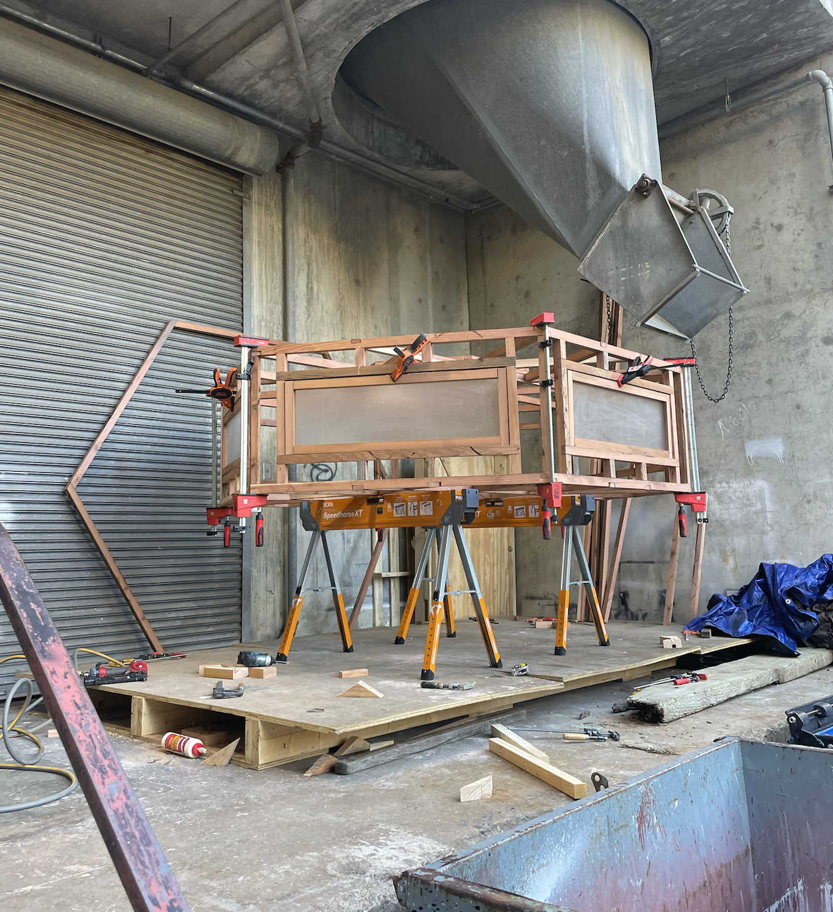
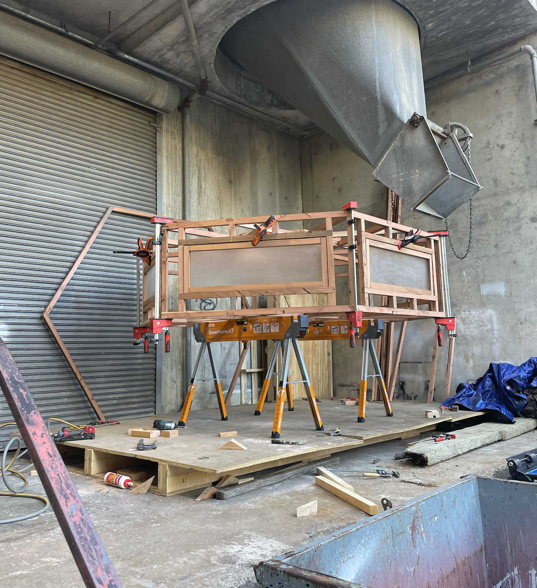

STEAM PAVILION
2024 – The largest project I have undertaken to date, this work began as a studio assignment and grew far beyond the course scope. Inspired by Bay Area fog patterns and Finnish sauna traditions, the design references the molecular structure of water and its efficiency in energy flow. Constructed entirely from reclaimed materials—including two redwood decks, a fence, and a shed—I milled and processed the wood myself before building the structure in the university’s fabrication yard. The UC Botanical Garden invited me to site the pavilion in their redwood grove as an interactive art installation.


 
